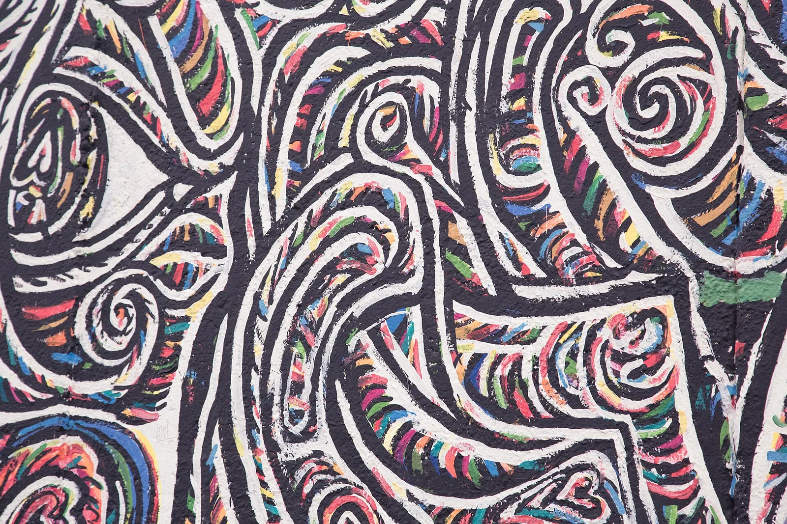

Ruta 01
Primera vez en Berlín
Reúne los símbolos de la reunificación, la huella del nazismo, el Muro y las colecciones de la Isla de los Museos. Es la opción más equilibrada para comprender la ciudad sin convertir los cuatro días en una carrera.

El Muro junto al Spree
Llegada y equipaje
Hora prudente de referencia. Activad la ruta solo si estáis instalados en el centro antes de las 17:00.
East Side Gallery · 90 min
Este tramo de 1,3 km del antiguo Muro se convirtió en una galería al aire libre tras la reunificación. Los murales no son mera decoración: muestran las esperanzas, tensiones y contradicciones de 1990 y funcionan mejor si se recorren completos. Abierta las 24 h; gratis.
Oberbaumbrücke y Kreuzberg · 75 min
El puente neogótico unía dos distritos separados durante la Guerra Fría y hoy enlaza Friedrichshain con Kreuzberg. Cruzarlo al atardecer permite ver el Spree y pasar de la zona monumental del Muro a un barrio de escala más cotidiana. Acceso continuo y gratuito.
Capital, memoria y barrios centrales
Reichstag: terraza y cúpula · 90 min
La intervención de Norman Foster coloca una cúpula transparente sobre el Parlamento y convierte la arquitectura en una reflexión sobre democracia y vigilancia ciudadana. El audioguía en español acompaña la rampa y ayuda a leer el perfil urbano. Gratis, pero con reserva previa, franja horaria y documento físico con foto; acceso desde las 08:00, última entrada 21:45.
Puerta de Brandeburgo · 35 min
Fue puerta real, límite de la ciudad dividida y escenario de la reunificación. La cuádriga y el eje de Unter den Linden permiten entender su escala política, más allá de la fotografía frontal. Siempre accesible; gratis.
Memorial del Holocausto · 90 min
El campo de 2.711 estelas produce una experiencia deliberadamente inestable y abstracta. El centro subterráneo devuelve nombres y biografías a las víctimas, por lo que completa el recorrido exterior. Estelas abiertas 24 h; centro 10:00–18:00, última entrada 17:15; gratis y con posible cola de seguridad.
Topografía del Terror · 2 h
Se levanta donde estuvieron las sedes centrales de la Gestapo, las SS y la Oficina de Seguridad del Reich. Fotografías, documentos y el propio solar explican cómo se organizó la persecución desde instituciones concretas; es denso y merece una visita pausada. Todos los días 10:00–20:00; gratis.
Checkpoint Charlie y Gendarmenmarkt · 90 min
Checkpoint Charlie está muy reconstruido y es turístico, pero encaja como parada breve después de la exposición que aporta el contexto. Gendarmenmarkt compensa con una de las composiciones urbanas más elegantes de Berlín. Ambos exteriores son gratuitos y siempre accesibles.
Unter den Linden, Hackesche Höfe y Scheunenviertel · 2 h 15 min
El eje monumental conduce hacia patios residenciales, pasajes y calles que recuperaron actividad tras la reunificación. El contraste entre representación estatal y tejido cotidiano completa la jornada sin añadir otro espacio de memoria denso; los exteriores son gratuitos y el final queda rodeado de opciones para cenar.
Isla de los Museos
Neues Museum · 2 h
La colección egipcia, con el busto de Nefertiti, convive con una reconstrucción arquitectónica que deja visibles las cicatrices de la guerra. Ese diálogo entre piezas antiguas y edificio recuperado lo convierte en mucho más que una sucesión de vitrinas. Domingo 10:00–18:00; 14 €; reservad entrada con hora.
Catedral de Berlín · 90 min
La visita une nave, cripta de los Hohenzollern, museo y ascenso a la cúpula, con una panorámica a 50 m sobre la Isla de los Museos. Su reconstrucción también ayuda a leer cómo Berlín ha tratado su herencia imperial. Domingo 12:00–17:00, última entrada 16:00; 15 €; el culto puede modificar el acceso.
Humboldt Forum · 90 min
El palacio reconstruido alberga exposiciones sobre Berlín y colecciones de culturas del mundo, pero también abre debates sobre colonialismo y restitución. Conviene escoger una muestra en lugar de intentar recorrer todo el edificio. Domingo 10:30–18:30; muchas exposiciones son gratuitas y otras requieren entrada.
DDR Museum · 2 h
La exposición interactiva se centra en la vida cotidiana de la Alemania Oriental: vivienda, consumo, educación, vigilancia y movilidad. Sirve como contrapunto humano a los grandes relatos políticos del día anterior. Abierto todos los días 09:00–21:00; 13,90 €; suele haber menos público después de las 18:00.
Mañana condicionada al vuelo
Desayuno junto al hotel y traslado. No reservéis una visita.
08:30–10:00 recorrido exterior del Memorial del Muro en Bernauer Straße. El recinto abre 08:00–22:00; el centro de visitantes cierra los lunes, pero la franja conservada, la torre y las estaciones documentales exteriores permiten entender físicamente la frontera.
Información oficial